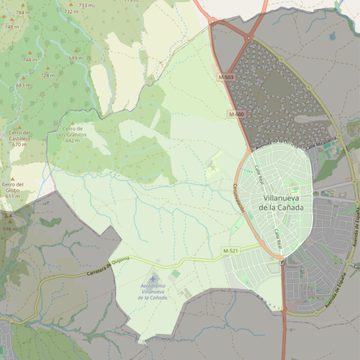

Santiago Apóstol
- Arciprestazgo
- Villaviciosa de Odón
- Población
- Villanueva de la Cañada
- Dirección postal
- c/ Goya, 2
- Código postal
- 28691
- Extensión
- 9,86 km² (986 ha)
- Teléfono
- 918 197 354
- Correo electrónico
- santiagoapostol-villanuevadelacanada@diocesisgetafe.es
- Información demográfica
- De la parroquia · De la población (Villanueva de la Cañada) · Del arciprestazgo (Villaviciosa de Odón)


Descargar mapaLímites según decreto
“Partiendo de la confluencia de la carretera M-600 con la Avenida de la Dehesa, arrancan por el eje de la Avenida de la Dehesa hasta la rotonda donde termina la calle Las Azucenas (en dirección noroeste); siguen por una línea recta imaginaria hasta el límite con el término municipal de Valdemorillo (en dirección norte), por los límites de los términos municipales de Villanueva de la Cañada-Valdemorillo (en dirección suroeste), Villanueva de la Cañada-Quijorna (en dirección sureste), Villanueva de la Cañada-Brunete (en dirección noreste) y por el eje de la carretera M-600 hasta la confluencia con la Avenida de la Dehesa, punto de partida” (Decreto de creación de límites, B.O., Junio-2006, pág. 718)